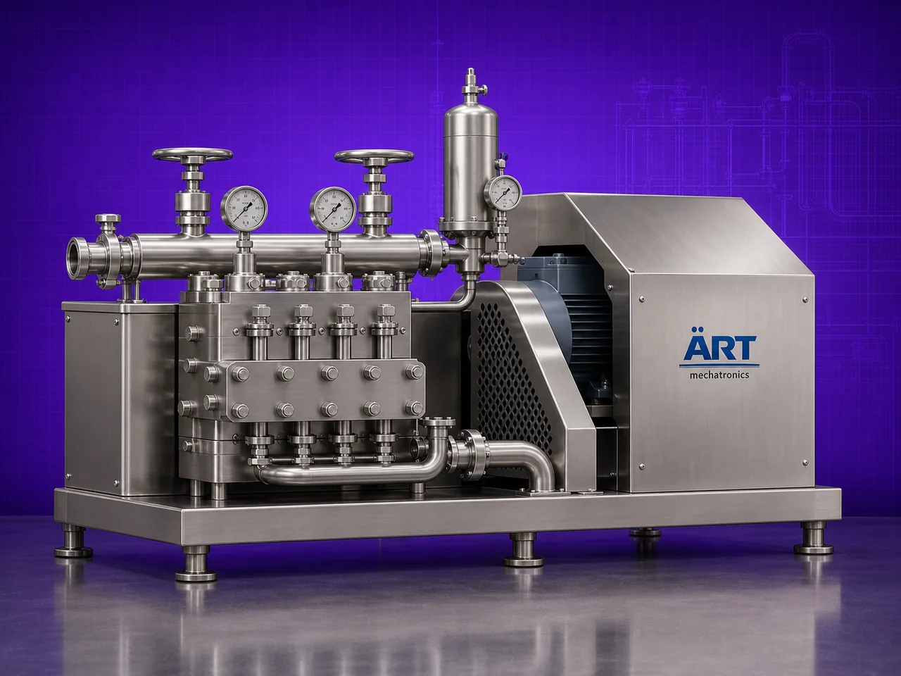

Homogenizer Machine (Industrial Emulsifying & High-Pressure Homogenization System)
A Homogenizer Machine, also known as an Industrial Homogenizer or High Pressure Homogenizer, is an advanced processing equipment designed for particle size reduction, emulsification, dispersion, cell disruption, and uniform blending of liquids, slurries, creams, suspensions, and viscous materials.

About the Homogenizer Machine
The machine works by forcing material through a specially designed high-pressure homogenizing valve or rotor-stator system, creating: ✔ Intense shear force ✔ Turbulence ✔ Cavitation ✔ Impact action
This process breaks particles into extremely fine sizes and produces: ✔ Stable emulsions ✔ Uniform suspensions ✔ Smooth texture ✔ Improved product consistency ✔ Enhanced shelf life
Homogenizer machines are widely used in industries such as:
• Dairy & beverages
• Pharmaceuticals
• Cosmetics
• Food processing
• Chemicals
• Paints & coatings
• Biotechnology
• Nutraceuticals
where fine homogenization and ultra-uniform product quality are critical.
The machine is especially suitable for: ✔ Milk homogenization ✔ Cream and lotion processing ✔ Beverage emulsification ✔ Syrup and suspension preparation ✔ Nano dispersion applications ✔ Slurry processing ✔ Viscous liquid blending
ART Mechatronics offers high-performance homogenizer machines, engineered for precision processing, hygienic operation, energy efficiency, and reliable industrial performance.
One machine, many names
Buyers search for this equipment under many terms — we manufacture all of them:
Working Principle of Homogenizer Machine
Generates:
- Shear force
- Turbulence
- Cavitation
- Mechanical impact
Types of Homogenizer Machines
Industries Using Homogenizer Machine
🥛 Dairy Industry
- Milk homogenization
- Dairy beverage processing
💊 Pharmaceutical Industry
- Suspensions
- Syrups
- Injectable formulations
💄 Cosmetic Industry
- Creams
- Lotions
- Gels
🍃 Food & Beverage Industry
- Sauces
- Juices
- Emulsions
⚗️ Chemical Industry
- Slurry and emulsion processing
🎨 Paint & Coating Industry
- Pigment and coating dispersion
🧬 Biotechnology Industry
- Cell disruption and sample processing
Features & Advantages
✔ Ultra-fine particle size reduction ✔ Stable emulsification and homogenization ✔ Improved product texture and consistency ✔ Enhanced product shelf life ✔ High-pressure precision processing ✔ Hygienic and GMP-compliant design ✔ Suitable for continuous operation ✔ Heavy-duty industrial construction ✔ Energy-efficient performance ✔ Excellent dispersion and suspension stability
Technical Highlights
- Capacity: Lab scale to industrial production scale
- Processing Type:
- High pressure
- Rotor stator
- Inline homogenization
- Construction: Stainless Steel / GMP design
- Pressure System: High-pressure homogenizing valve
- Heating/Cooling: Optional jacketed system
- Operation: Manual / Automatic / PLC-based
Turnkey Homogenization Solutions
ART Mechatronics offers:
- Complete homogenizer system design
- Inline and vacuum homogenization systems
- Heating and cooling integration
- Automation and process control systems
- Installation & commissioning
- After-sales service & AMC
Why Choose Art Mechatronics
- Expertise in advanced homogenization technology
- Customized solutions for precision industries
- Hygienic and GMP-compliant machine construction
- High-performance and reliable systems
- Proven industrial performance across sectors
Applications
- Dairy Processing Plants
- Pharmaceutical Manufacturing Units
- Cosmetic Production Facilities
- Food & Beverage Processing Plants
- Chemical Processing Industries
- Biotechnology Laboratories
Industries that use the Homogenizer Machine
Related Mixing & Blending machines
Get pricing & specs for the Homogenizer Machine
Share the product, target capacity, current process and plant location. These details help our engineers discuss the right machine or line configuration.
One partner, from design to start-up
ART Mechatronics designs, manufactures, installs and commissions your Homogenizer Machine solution with regional presence in India, UAE and Thailand.